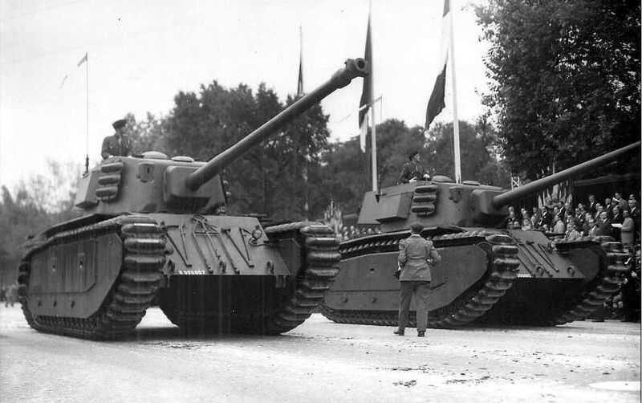

Heavy Tank | Perancis | Perang Dunia 2
| ARL 44 | |
|---|---|
|

|
|
| Spesifikasi | |
| Berat | 48 ton |
| Panjang | 10,53 m |
| Lebar | 3,40 m |
| Tinggi | 3,20 m |
| Awak | 5 |
| Perisai | 120 mm |
|
Senjata utama |
1× 90 mm SA 45 37 peluru |
|
Senjata pelengkap |
2× 7,5 mm MAC 31 - |
| Jenis Mesin | Maybach HL230 V-12 (575 hp) |
| Daya Jelajah | 350 km |
| Kecepatan | 37,2 km/j |
ARL-44 adalah tank berat buatan Prancis yang dikembangkan
segera setelah Perang Dunia II berakhir. Tank ini memiliki posisi unik
dalam sejarah militer Prancis karena merupakan tank pertama yang
diproduksi setelah pendudukan Jerman berakhir, sekaligus simbol
kebangkitan industri pertahanan Prancis yang sempat lumpuh total
selama perang.
Dengan bobot sekitar 48 ton dan diawaki oleh lima orang, ARL-44
dirancang untuk menggabungkan pengalaman desain tank sebelum perang
dengan pengaruh teknologi dari masa perang. Tank ini awalnya
dipersenjatai dengan meriam 90 mm DCA, yang merupakan adaptasi dari
meriam antipesawat, kemudian diganti dengan meriam 90 mm SA45 L/65 —
senjata yang mampu menembus tank-tank berat seperti Panther dan Tiger
pada jarak menengah.
ARL-44 memiliki lapisan baja depan setebal hingga 120 mm,
menjadikannya salah satu tank dengan perlindungan terkuat di masanya.
Namun, desainnya masih menggunakan suspensi tipe “bogie”
vertikal yang kuno, mirip dengan tank-tank Prancis pra-perang seperti
Char B1. Hal ini membuat ARL-44 kurang nyaman di medan berat dan tidak
seimbang dibandingkan tank-tank pascaperang lainnya seperti Panther,
Centurion, atau T-54.
Tank ini digerakkan oleh mesin Maybach HL230 buatan Jerman —
mesin yang sama digunakan pada Panther — menghasilkan sekitar 600
tenaga kuda, dengan kecepatan maksimum sekitar 35 km/jam di jalan
raya. Dengan rasio daya terhadap berat yang relatif rendah, ARL-44
cenderung lambat dan kurang lincah, meskipun memiliki daya tembak dan
perlindungan yang memadai.
Secara keseluruhan, ARL-44 lebih merupakan proyek transisi teknologi
daripada tank tempur yang benar-benar modern. Ia melambangkan usaha
Prancis untuk kembali mandiri secara militer dan industri setelah
perang, sambil menunggu terciptanya generasi baru tank yang lebih
modern seperti AMX-50.
Latar belakang munculnya ARL-44 bermula pada akhir pendudukan Jerman
di Prancis. Setelah pembebasan tahun 1944, pemerintah Prancis berupaya
keras mengembalikan kedaulatan industri militernya, termasuk sektor
kendaraan lapis baja yang sebelumnya didominasi Jerman. Salah satu
langkah awal adalah menghidupkan kembali proyek tank berat yang sempat
tertunda sejak sebelum perang, dengan tujuan menunjukkan bahwa Prancis
masih mampu berdiri sejajar dengan kekuatan besar lainnya.
Proyek ini dipimpin oleh
Atelier de Construction de Rueil (ARL), bekerja sama dengan
Atelier de Construction d’Issy-les-Moulineaux (AMX) dan
Atelier de Construction de Puteaux (APX). Desain awal ARL-44
sangat dipengaruhi oleh tank Char B1 bis — tank berat andalan
Prancis sebelum 1940 — namun dengan peningkatan signifikan pada
lapisan baja dan persenjataan.
Prototipe pertama selesai pada tahun 1946, dan produksi terbatas
dimulai pada 1947. Karena Prancis belum mampu memproduksi mesin tank
berdaya tinggi sendiri, mesin Maybach HL230 bekas Panther
digunakan sebagai solusi sementara. Hal ini menunjukkan bahwa meskipun
Prancis ingin membangun tank sepenuhnya mandiri, keterbatasan
pascaperang membuatnya tetap bergantung pada komponen asing.
Ketika ARL-44 akhirnya memasuki dinas aktif pada akhir 1949, dunia
tank telah berubah drastis. Tank-tank baru seperti T-54 Soviet,
Centurion Inggris, dan M26 Pershing Amerika sudah
menggunakan teknologi lebih maju, seperti suspensi torsion bar dan
desain menara yang lebih ergonomis. Akibatnya, ARL-44 segera dianggap
usang bahkan sebelum benar-benar beroperasi secara luas.
Sebanyak sekitar 60 unit ARL-44 diproduksi, dan tank ini digunakan
terutama untuk tujuan pelatihan serta parade militer, bukan
pertempuran. Meski tidak pernah terlibat dalam konflik besar, ARL-44
berperan penting sebagai jembatan antara teknologi pra-perang dan tank
modern Prancis. Dari proyek ini, para insinyur Prancis memperoleh
pengalaman berharga yang kemudian menjadi dasar pengembangan
AMX-50
dan seri AMX berikutnya, termasuk AMX-30 yang menjadi salah
satu tank utama NATO di era Perang Dingin.
Pada awal 1950-an, ARL-44 mulai dipensiunkan, digantikan oleh
tank-tank generasi baru. Meskipun umurnya singkat dan kemampuannya
terbatas, keberadaan ARL-44 menandai kembalinya kemandirian industri
militer Prancis setelah masa pendudukan, sekaligus menjadi simbol
semangat nasional untuk bangkit dari keterpurukan perang.
ARL-44 adalah tank berat pertama yang dikembangkan oleh Prancis
setelah berakhirnya Perang Dunia II. Prototipe-nya selesai pada tahun
1946, dengan tujuan mengembalikan kemampuan industri pertahanan
Prancis setelah pendudukan Jerman. Tank ini memadukan teknologi lama
dari era perang dengan konsep modern, menggunakan meriam 90 mm DCA 45,
dan lapisan baja setebal 120 mm.
Namun, ARL-44 mengalami berbagai keterbatasan teknis, seperti sistem
suspensi kuno dan mesin Maybach bekas Jerman yang kurang andal. Hanya
sekitar 60 unit yang diproduksi, dan masa operasionalnya sangat
singkat, sekitar 1949–1953, sebelum digantikan oleh tank Amerika M47
Patton. Meski bukan tank yang sukses di medan tempur, ARL-44 memiliki
nilai historis penting sebagai simbol kebangkitan industri militer
Prancis pascaperang.
Daftar Isi